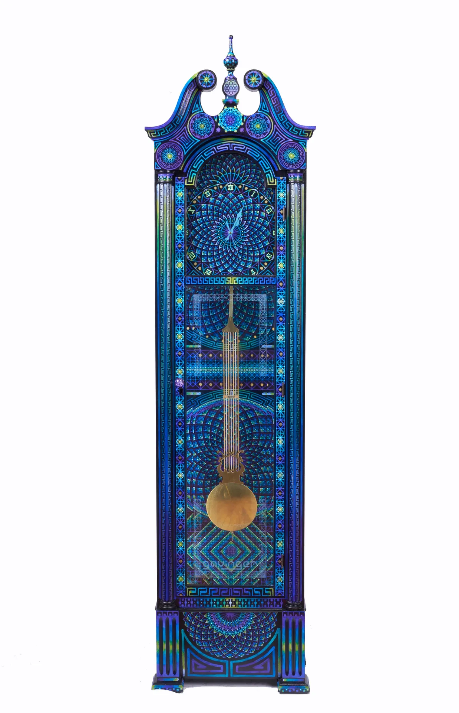
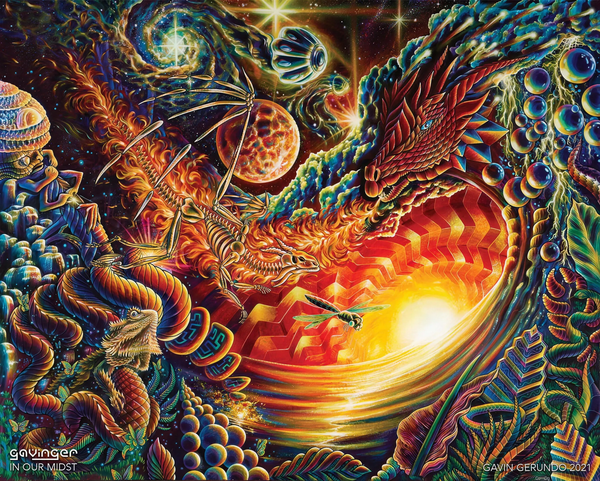
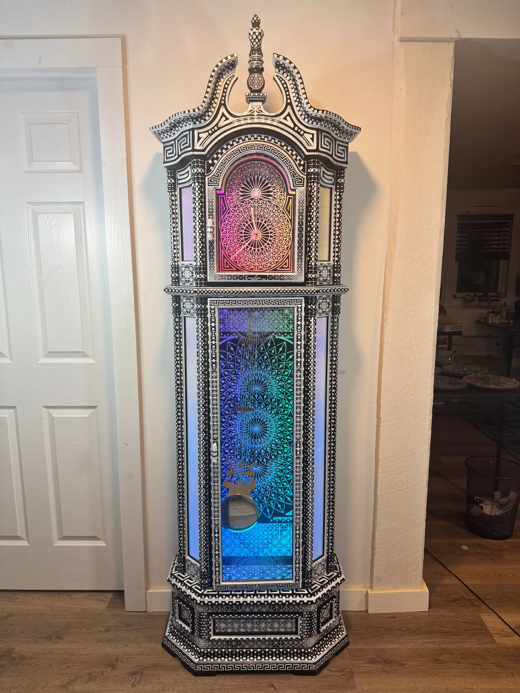

FOR GAVIN · THE NEXT PASS ON THE FRACTAL DIVE
Right now the dive is an illusion. Next, it becomes.
The site you just scrolled runs on choreography: two photographs, a zoom, a mask, a crossfade. It looks good — but at the seam between artworks, your eye can catch the trick. This page shows exactly what changes when we hand those seams to Higgsfield's Seedance 2.0 and upscale the masters to 4K.
Re-enter the current dive →01 · TODAY
What the transition really is: two stills, cross-dissolving.


A live re-creation of the site's actual seam — In Our Midst diving into the Midnight Grandfather Clock, looping. Watch the moment of handoff: the paint goes soft as the zoom deepens, and for a beat, two unrelated images overlap. Nothing truly transforms — one image dissolves while another fades in.
02 · WITH SEEDANCE 2.0
The seam becomes a single painted shot.
For each transition we give the model two anchors: the exact detail region the camera dives into, and the next artwork's full frame. Seedance then paints the five seconds in between — the camera keeps pushing through the brushwork, strokes flow and re-form, these maze-pods literally unfurl into the clock's mandalas. Every frame is synthesized crisp at 1080p. There is no crossfade because there is no cut: the first frame is the detail below, the last frame is the clock.
Start frame — the actual dive-target detail of In Our Midst (this crop is defined in the site today).
End frame — the Midnight Grandfather Clock. Seedance paints everything between the two.
And for the kinetic pieces, the morphs are video-referenced: this real footage of the Midnight clock feeds the model, so the pendulum is already swinging as the morph resolves — and the seam lands directly on footage like this.
| Today | With Higgsfield | |
|---|---|---|
| Deep-zoom detail | upscaled, goes soft | synthesized, stays crisp |
| The seam | two stills dissolving | one continuous shot |
| Motion | rigid zoom of a flat plane | camera push; brushwork that flows |
| Continuity | compositional rhyme | literal transformation |
| Scroll feel | scrubbed, reversible | still scrubbed & reversible |
03 · 4K UPSCALING
The dwell moments get their sharpness back.

Today — this is genuinely what the site renders at maximum zoom into the B&W clock: the freehand Posca linework dissolves into softness.
With Higgsfield 4K upscaling, the deep zoom holds line-level detail. (Shown here at our file's native sharpness as an approximation — the real 4K output resolves finer still.)
04 · THE PLAN
What it takes.
| Upgrade | Scope | Credits |
|---|---|---|
| Seedance 2.0 std morphs, 1080p, 5 s, scroll-scrubbed | all 9 seams of the loop | 405 |
| 4K upscale of the ten dive masters | 10 images | 20 |
| Kinetic dwells — real clock & lamp footage inside the dive | 3 chapters | 0 (already filmed) |
| Video upscales (morph clips + dive footage) | 9–14 clips | priced on first run |
Everything above is preflighted against Higgsfield's live pricing. The current site stays fully functional throughout — morphs swap in one seam at a time, and any seam that comes out weak gets retaken before it ships.
Back to the dive →